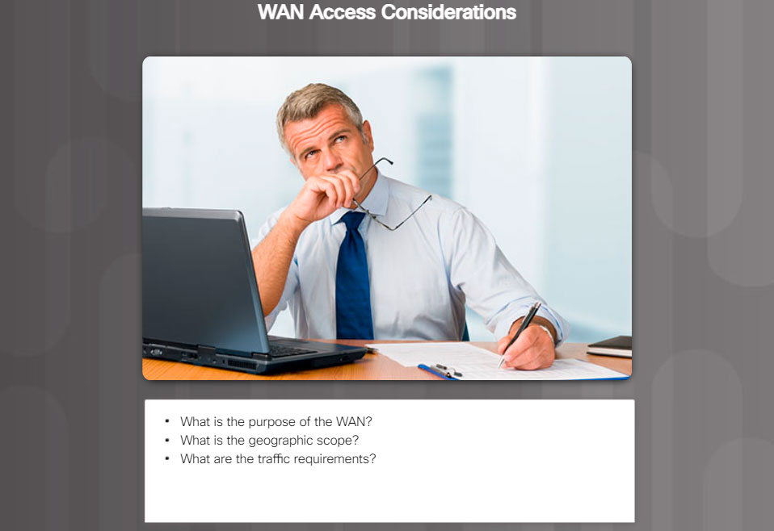

There are many important factors to consider when choosing an appropriate WAN connection. For a network administrator to decide which WAN technology best meets the requirements of their specific business, they must answer the following questions:
What is the purpose of the WAN?
There are a few issues to consider:
- Will the enterprise connect local branches in the same city area, connect remote branches, or connect to a single branch?
- Will the WAN be used to connect internal employees, or external business partners and customers, or all three?
- Will the enterprise connect to customers, connect to business partners, connect to employees, or some combination of these?
- Will the WAN provide authorized users limited or full access to the company intranet?
What is the geographic scope?
There are a few issues to consider:
- Is the WAN local, regional, or global?
- Is the WAN one-to-one (single branch), one-to-many branches, or many-to-many (distributed)?
What are the traffic requirements?
There are a few issues to consider:
- What type of traffic must be supported (data only, VoIP, video, large files, streaming files)? This determines the quality and performance requirements.
- What volume of traffic type (voice, video, or data) must be supported for each destination? This determines the bandwidth capacity required for the WAN connection to the ISP.
- What Quality of Service is required? This may limit the choices. If the traffic is highly sensitive to latency and jitter, eliminate any WAN connection options that cannot provide the required quality.
- What are the security requirements (data integrity, confidentiality, and security)? These are important factors if the traffic is of a highly confidential nature, or if it provides essential services, such as emergency response.